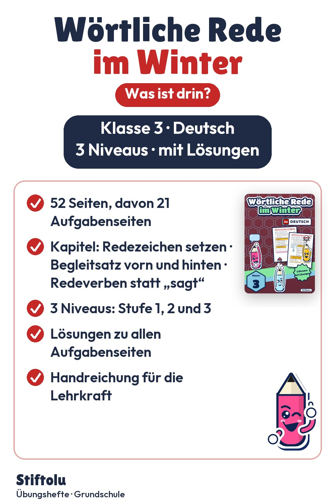

Werbung · Übungsheft von Stiftolu
Wörtliche Rede im Winter – Redezeichen und Begleitsatz, Klasse 3

Doppelpunkt beim vorangestellten, Komma beim nachgestellten Begleitsatz: Das üben Kinder in Klasse 3 an Sätzen und kleinen Texten rund um Schnee, Schlitten, Futterhaus und Eis. Statt „sagt“ wählen sie Verben wie flüstern, rufen oder jubeln. Die 52 Seiten mit Lösungen sind erhältlich auf eduki.